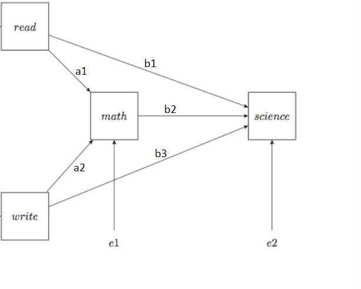
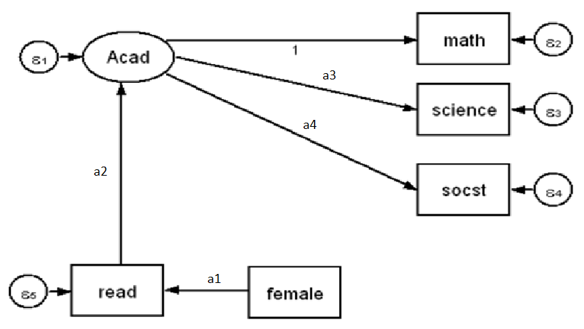

Homework 3 – Path Analysis and SEM
This assignment uses the hsb2.csv
R Coding Tips
- Read
hsb2.csvand keep variable names lowercase (read,write,math,science,socst,female). - Use
lavaan::sem()for both the observed-variable path model and the SEM model. - In lavaan syntax, use
~for regressions and=~for latent-variable measurement. - Label parameters as shown in the diagrams so estimates map back to the figures.
- Request standardized estimates, fit measures, and R-squared values when summarizing the model.
Data Dictionary for hsb2.csv
Two hundred observations were randomly sampled from the High School and Beyond survey, a survey conducted on high school seniors by the National Center of Education Statistics.
200 observations and 11 variables:
- Id: unique identifier
- Female: 0=male, 1=female
- Race: 1=Hispanic, 2=Asian, 3=African-American, 4=Caucasian
- SES: 1=Low, 2=Middle, 3=High
- Schtype: 1=Public, 2=Private
- Prog: 1=General, 2=Academic, 3=Vocational
- Read: Reading Score
- Write: Writing Score
- Math: Math Score
- Science: Science Score
- Socst: Social Studies Score
Questions
1. Use hsb2.csv and path analysis to estimate the parameters
- Estimate the parameters: a1, a2, b1, b2, b3, e1, e2.
- Questions:
- What do they mean?
- What seems to have the strongest relationship?
- What are the purposes of this path analysis?
- What does it tell you?
- What doesn’t it tell you?
Please explain your answers with full sentences/paragraphs.

2. Use hsb2.csv and SEM to estimate the parameters (ignore e1-e5)
- Estimate the parameters: a1-a4.
- Instructions:
- Use SEM (Structural Equation Modeling) to estimate the parameters.
- Use R with the lavaan package to answer this question.
- The dependent variable is a latent variable Acad with three observed indicators: math, science, and socst.
- There are two additional observed variables: the independent variable female and a mediator variable read.
- Questions:
- What do these estimates mean?
- From this model, how does read affect Acad?
- Does Acad affect the three STEM measures?
- Does female affect read?
Please explain your answers with full sentences/paragraphs.
